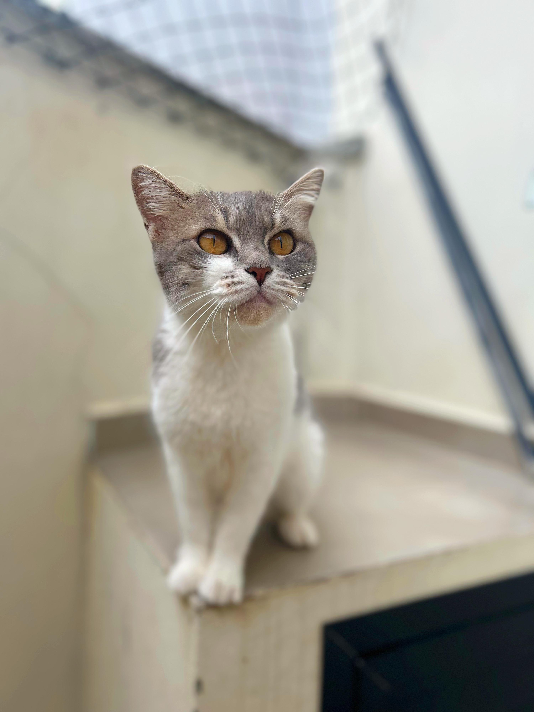

.png)
Início
Estatisticas
Notícias
Animais adotados
Contato



Branca
DESCRIÇÃO: Branca foi retirada de maus tratos, era usada de forma indevida para caça. É muito dócil, querida e brincalhona, mas apresenta um certo grau de medo. Precisa de um lar com muito amor, carinho e paciência.
Maia e Mavie
DESCRIÇÃO: Maia foi encontrada junto com sua irmã, Mavie, abandonada em Brusque. Foram resgatadas e agora Maia e Mavie precisam de um lar com muito espaço, amor e carinho. É super carinhosa e protetora!
Gloria
DESCRIÇÃO: Glória (mãe) e Cléo (filha), foram encontradas abandonadas na BR. São muito dóceis, amáveis e ativas, apesar da idade mais adulta, não apresentam problemas de saúde e são muito brincalhonas.
Luma
DESCRIÇÃO: Luma vivia nas ruas com seu irmão Juca. Ele foi adotado, mas ela ainda segue esperando seu tão sonhado lar. Luma é puro amor e calmaria! Precisa de um lar com muito amor e carinho.
Difusor
DESCRIÇÃO: Difusor é um gatinho macho, que foi encontrado em uma fábrica de peças automotivas (por isso o nome), chegou em estado caquético, com extrema magreza. Aos poucos foi se recuperando e hoje é um jovem 100% saudável e cheio de amor!
Bartô
DESCRIÇÃO: Bartô foi resgatado junto com seus 4 irmãos e sua mamãe Angel. Estavam em situação de rua, e viviam em uma casa improvisada de plástico. Bartô foi o único que sobrou dos seus irmãos.
Luzia
Luzia chegou até nós através de um pedido de ajuda, onde a pessoa que pediu ajuda relatava que tinha um “monstro” em sua casa. Quando fomos resgatar, descobrimos que esse “monstro”, na verdade é uma linda princesa assustada e muito carinhosa!
Mimi
DESCRIÇÃO: Mimi foi abandonada em uma residência, viveu um tempo na rua até ser resgatada. É uma gatinha muito amorosa e carente!.